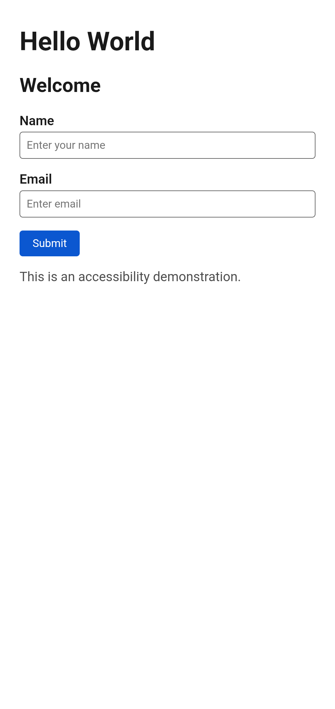
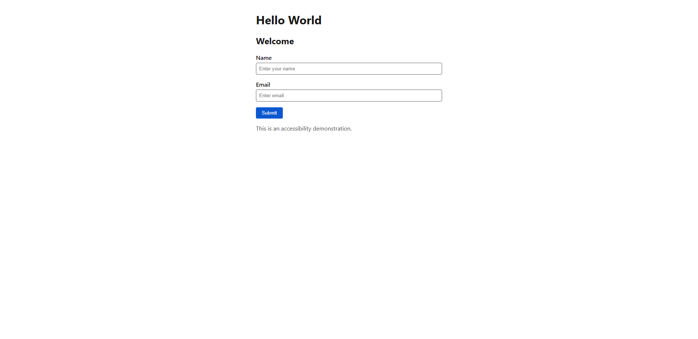
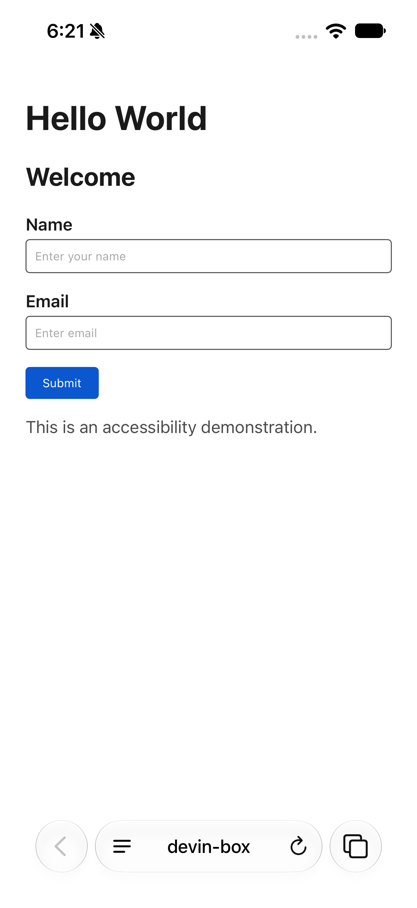

Accessibility report — WCAG 2.2 Level A/AA (automated)
Generated 2026-10-05T18:23:58.371Z. WCAG 2.2 Level A + AA (axe-core tags: wcag2a, wcag2aa, wcag21a, wcag21aa, wcag22a, wcag22aa)
Automated axe-core results only. Passing these rules does not demonstrate WCAG 2.2 AA conformance; the manual checks listed must also be completed.
Totals
4targets
0violations
0critical
0serious
0moderate
0minor
Targets
| Target | Environment | Browser / platform | Result | Violations | Needs review | Rules passed | Sauce job |
|---|---|---|---|---|---|---|---|
| playwright-chromium-home | Local Playwright (localhost dev server) | chromium | pass | 0 | 0 | 13 | — |
| sauce-android-chrome-home | Android Chrome (Sauce Android emulator) | chrome · 16.0 · Android · Google Pixel 9 Emulator | pass | 0 | 0 | 13 | a1e7831e11fd49b986d591b9cae9b7b9 MCP: passed |
| sauce-desktop-chrome-home | Desktop Chrome (Windows 11, latest) | chrome · 154.0.8037.58 · Windows 11 | pass | 0 | 0 | 13 | b8848779e867481c99385178e3c17526 MCP: passed |
| sauce-ios-safari-home | iOS Safari (Sauce iOS simulator) | Safari · 27.0 · iOS · iPhone 16 Simulator | pass | 0 | 0 | 14 | 2ff27753c106413d9e51e047cd9096cb MCP: passed |
Automated violations
No automated WCAG 2.2 A/AA violations were detected on any target.
Manual WCAG 2.2 AA checks (outstanding)
| SC | Criterion | What to verify | Status |
|---|---|---|---|
| 1.3.2 | Meaningful Sequence | Reading/DOM order matches visual order. | not tested (manual) |
| 1.3.4 | Orientation | Page works in portrait and landscape on the mobile targets. | not tested (manual) |
| 1.4.10 | Reflow | No 2-D scrolling at 320 CSS px / 400% zoom. | not tested (manual) |
| 1.4.11 | Non-text Contrast | Input borders, focus rings and button boundaries reach 3:1. | not tested (manual) |
| 1.4.13 | Content on Hover or Focus | Any tooltip/popover is dismissible, hoverable, persistent. | not tested (manual) |
| 2.1.1 / 2.1.2 | Keyboard / No Keyboard Trap | All controls operable by keyboard alone; no traps. | not tested (manual) |
| 2.4.3 | Focus Order | Tab order is logical. | not tested (manual) |
| 2.4.6 | Headings and Labels | Headings and labels are descriptive (axe only checks presence). | not tested (manual) |
| 2.4.7 | Focus Visible | Every focusable element shows a visible focus indicator. | not tested (manual) |
| 2.4.11 | Focus Not Obscured (Minimum) (new in 2.2) | Focused element is not hidden by sticky content. | not tested (manual) |
| 2.5.7 | Dragging Movements (new in 2.2) | Any drag interaction has a single-pointer alternative. | not tested (manual) |
| 2.5.8 | Target Size (Minimum) (new in 2.2) | Targets are at least 24x24 CSS px or spaced (axe check is partial). | not tested (manual) |
| 3.2.1 / 3.2.2 | On Focus / On Input | No unexpected context change on focus or input. | not tested (manual) |
| 3.2.6 | Consistent Help (new in 2.2) | Help mechanisms appear in the same relative order across pages. | not tested (manual) |
| 3.3.1 / 3.3.3 | Error Identification / Suggestion | Validation errors are announced in text with suggestions. | not tested (manual) |
| 3.3.7 | Redundant Entry (new in 2.2) | Previously entered info is auto-filled or selectable. | not tested (manual) |
| 3.3.8 | Accessible Authentication (Minimum) (new in 2.2) | No cognitive function test for login, if added. | not tested (manual) |
| 4.1.3 | Status Messages | Submit status is announced by screen readers (VoiceOver/TalkBack test). | not tested (manual) |
| — | Assistive technology pass | Screen reader (NVDA/VoiceOver/TalkBack), zoom and voice control walkthrough. | not tested (manual) |
Page screenshots


